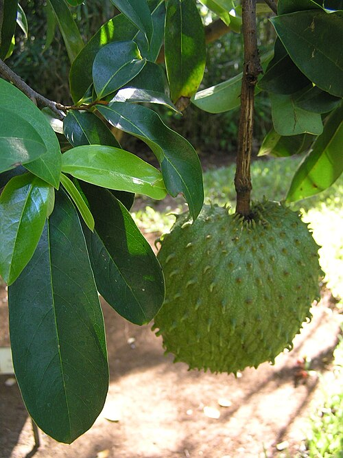

eyolo yokolali
Anona
Annona muricata (Graviola)

- Use
- fruta, alimentação
- How it is used
- eyolo yokolali kaira ekonere,owakase ekate, ekiakasehi kadene enira,ayokahali eri, keya ehotene,um fruta anona de mata,mas anoneira nao e grande, um arvore medio, comer a fruta, quando maduro ficar preto
How to cite
eyolo yokolali. In: Enawenê-Nawê, Ethnobotany. https://enawenenawe.terradoc.org/en/ethnobotany/34-eyolo-yokolali.html